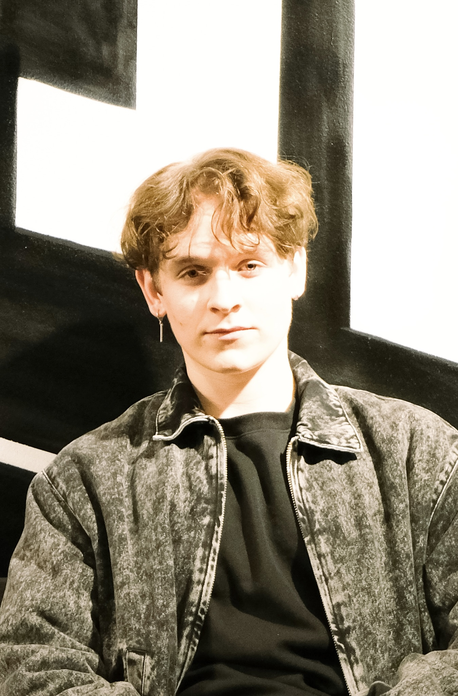

Seit Sommer 2023 mache ich eine Ausbildung zum Screendesigner, hauptsächlich gestalten wir Logos, erstellen Werbebanner oder arbeiten mit der Hilfe von HTML und css an einer Website. Abgesehen davon bin ich in meiner Freizeit auch viel am Computer und versuche mir ständig neues anzueignen. Ich liebe es mir ständig neue Sachen beizubringen die mir unter anderem später auch in meinem Berufsleben sehr hilfreich sein könnten. Als Screen Designer ist es meine Leidenschaft, fesselnde visuelle Erlebnisse zu schaffen und digitale Welten zum Leben zu erwecken. In meinem Portfolio findest du nicht nur eine Sammlung meiner besten Arbeiten, sondern auch einen Einblick in meine kreative Reise und meine einzigartige Perspektive.
